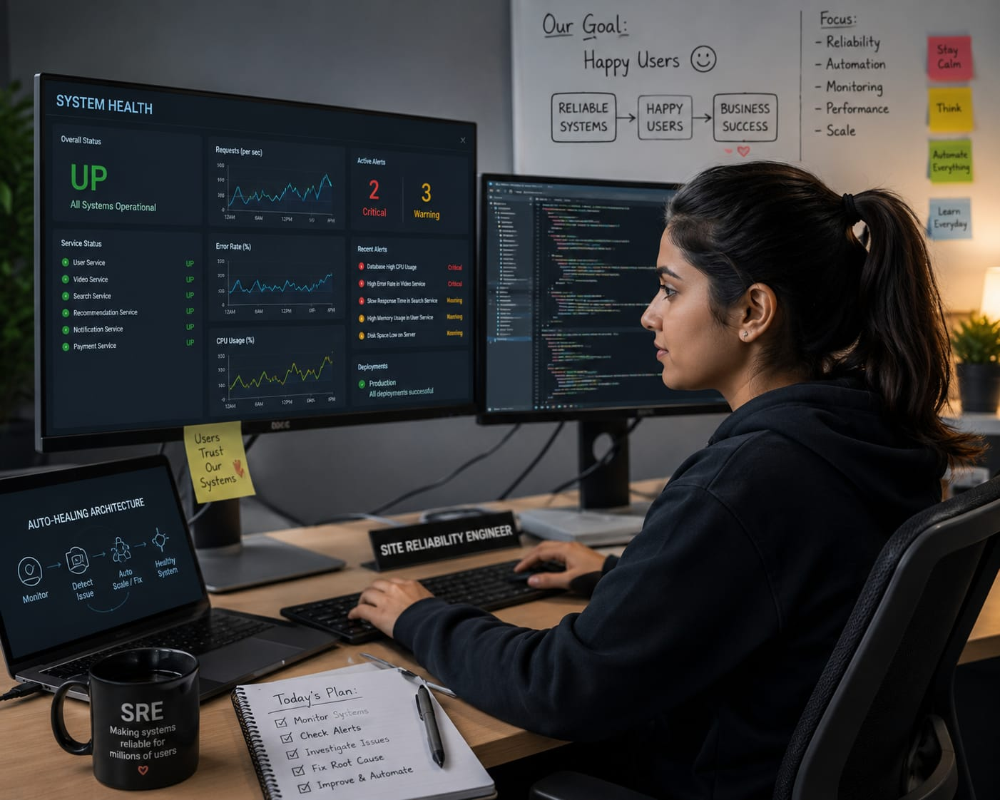

- You may be using apps like Instagram, WhatsApp, or YouTube every day.
- Millions of people use these apps at the same time.
- Imagine the app suddenly stops working for everyone.
- Users may not be able to send messages, watch videos, or upload photos.
- Someone quickly find the issue and help fix it before it affects too many users.
- That person is a Site Reliability Engineer.
- 👉 In simple words: Site Reliability Engineers monitor apps and websites and make sure they keep working smoothly.
Site Reliability Engineer
🧑🎨 What Do They Do?

🎓 How to Become a Site Reliability Engineer
You have two options:
-
Start early with a Diploma
After Class 10, you can choose a relevant diploma course. Complete the diploma and join the second year of an engineering course by applying through lateral entry. -
Finish Class 12
Complete Class 11 and 12, then you can do a B.Tech./B.E. in the relevant field.
These beginner-level courses help students learn computer systems, networking, programming, operating systems, and automation fundamentals.
Diploma in Computer Science Engineering
Duration: 3 Years
Eligibility: Class 10 Pass
Entrance Exam: Polytechnic Entrance Exam / Merit-Based Admission
Diploma in Information Technology
Duration: 3 Years
Eligibility: Class 10 Pass
Entrance Exam: Polytechnic Entrance Exam / Merit-Based Admission
📝 Exam Details
(Click on the exam name to see full details)
Polytechnic Entrance Exam Merit-Based Admission Institute-Level TestNote: Many Site Reliability Engineers begin by learning programming, operating systems, networking, Linux, cloud platforms, and automation before specializing in system reliability and performance.
These degree programs help students learn programming, computer systems, networking, cloud computing, automation, and software reliability.
B.Tech in Computer Science Engineering
Duration: 4 Years
Eligibility: 10+2 with Physics, Chemistry, and Mathematics
Entrance Exam: JEE Main / State Engineering Entrance Exams
B.Tech in Information Technology
Duration: 4 Years
Eligibility: 10+2 with Physics, Chemistry, and Mathematics
Entrance Exam: JEE Main / State Engineering Entrance Exams
Bachelor of Computer Applications (BCA) in Cloud Computing
Duration: 3 Years
Eligibility: 10+2 Pass (Any Stream)
Entrance Exam: CUET-UG / University Merit-Based Admission
B.Sc in Computer Science
Duration: 3 Years
Eligibility: 10+2 Pass (Science Stream Preferred)
Entrance Exam: University Entrance Test / Merit-Based Admission
📝 Exam Details
(Click on the exam name to see full details)
JEE Main State Engineering Entrance Exams CUET-UG University Entrance Tests Merit-Based AdmissionNote: Site Reliability Engineers usually learn programming, operating systems, networking, cloud platforms, databases, and automation during their degree programs.
Students who complete a diploma can join the second year of selected degree programs through lateral entry.
B.Tech Lateral Entry in Computer Science Engineering
Duration: 3 Years
Eligibility: Diploma in Computer Science, Information Technology, or related fields
Entrance Exam: State Lateral Entry Entrance Exams (ECET / JELET / LEET)
B.Tech Lateral Entry in Information Technology
Duration: 3 Years
Eligibility: Diploma in Computer Science, Information Technology, or related fields
Entrance Exam: State Lateral Entry Entrance Exams (ECET / JELET / LEET)
📝 Exam Details
(Click on the exam name to see full details)
State Lateral Entry Exams Merit-Based AdmissionNote: After lateral entry, students continue learning programming, operating systems, networking, cloud platforms, automation, and software reliability concepts that are useful for becoming a Site Reliability Engineer.
These advanced programs help students learn large-scale systems, cloud infrastructure, reliability engineering, performance optimization, and enterprise-level automation.
M.Tech in Computer Science Engineering
Duration: 2 Years
Eligibility: B.Tech / B.E. in CSE, IT, ECE, or related fields
Entrance Exam: GATE / University Entrance Exams
M.Tech in Cloud Computing
Duration: 2 Years
Eligibility: B.Tech / B.E. in Engineering or MCA
Entrance Exam: GATE / University Entrance Exams
MCA in Cloud Computing
Duration: 2 Years
Eligibility: BCA / B.Sc. in Computer Science / B.Tech / B.E. in Engineering or equivalent
Entrance Exam: University Entrance Exam
Post Graduate Diploma in Cloud Computing
Duration: 1 Year
Eligibility: Graduate in Engineering, Computer Science, IT, or related fields
Entrance Exam: Direct Admission / Technical Interview
📝 Exam Details
(Click on the exam name to see full details)
GATE University Entrance Exams Technical Interview Direct AdmissionNote: Advanced studies help Site Reliability Engineers build expertise in cloud platforms, distributed systems, automation, monitoring, performance optimization, and large-scale infrastructure management.
Note:
(Age limits, marks, and admission process may vary depending on the college or state.
Below are some colleges that offer these courses.
These courses are available in many colleges and universities across India. You can choose colleges based on your location, budget, and entrance exams.)
🏛️ Colleges offering these courses in India
(Tap on a college to view the details)
After Class 12
Manipal Institute of Technology (MIT), Manipal, Karnataka Lovely Professional University (LPU), Punjab CMR University, Bengaluru, Karnataka Loyola Academy, TelanganaSTEP 1
Imagine you are working as a Site Reliability Engineer at a company like YouTube or Amazon.
STEP 2
Millions of people are using the app or website every day.
STEP 3
Your job is to make sure the app keeps working properly.
STEP 4
You create programs that can automatically find problems in the system.
STEP 5
If the app becomes slow or stops working, you find the problem and fix it.
STEP 6
You also improve the system, so similar problems do not happen again.
STEP 7
If you enjoy coding and solving problems, this career may suit you.
Where do Site Reliability Engineers work? (Job Roles + Growth)
Site Reliability Engineers work in : Software companies, IT companies, Cloud service providers, Technology startups, e-commerce companies, Financial technology companies, Streaming platforms, and Large-scale online services.
🟢 Beginner Roles
Junior Site Reliability Engineer
(After Short-Term Certification / Diploma)
Monitors system alerts and helps keep websites and apps running smoothly.
SRE Graduate Trainee
(After Diploma / BCA / B.Tech)
Helps test systems, investigate issues, and support reliability teams.
🔵 Mid-Level Roles
Site Reliability Engineer (SRE)
(After BCA / B.Tech + Experience)
Uses automation to prevent outages and keep services available for users.
Systems Performance Engineer
(After BCA / B.Tech + Experience)
Improves system speed and helps apps handle large numbers of users.
🟣 Advanced Roles
Principal SRE Architect
(After MCA / M.Tech + Experience)
Designs reliable systems that can continue working even during failures.
Director of Reliability Engineering
(After Senior Leadership Experience)
Leads teams responsible for keeping large technology platforms reliable.
Cloud Technology Companies
Monitor cloud infrastructure and ensure services remain available and reliable.
Software & IT Companies
Maintain system performance and prevent application outages.
E-Commerce Companies
Keep online shopping platforms running smoothly during high-traffic events.
Banking & Financial Companies
Ensure critical financial systems remain secure, stable, and available.
Mobile App & Technology Companies
Monitor app performance and quickly resolve issues affecting users.
Remote SRE Jobs
Monitor systems, respond to alerts, and improve reliability.
(Click Yes or No for each question)
1. Have you ever used an app or website that suddenly stopped working or became very slow?
2. Are you interested in learning how millions of people use apps and websites without any problems?
3. Have you ever wondered who fixes problems when a popular app or website suddenly stops working?
4. Are you interested in doing a job where you help apps and websites work properly all the time?
5. Imagine you work for a company like YouTube or Amazon. Your job is to make sure the app or website keeps working properly for millions of users and quickly fix problems when something goes wrong. Does this excite you?